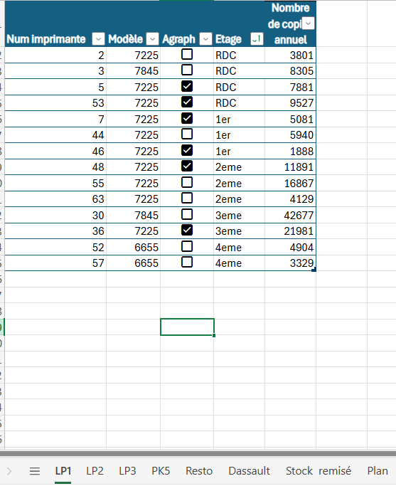
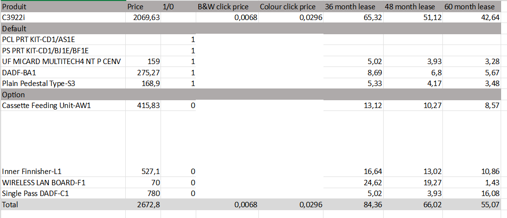
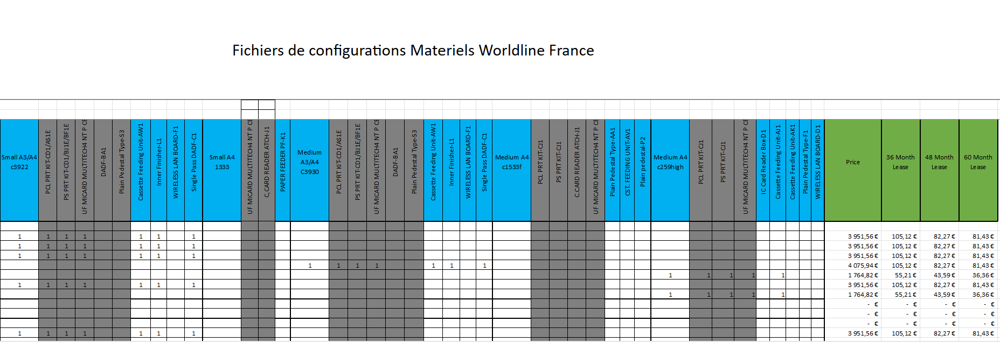
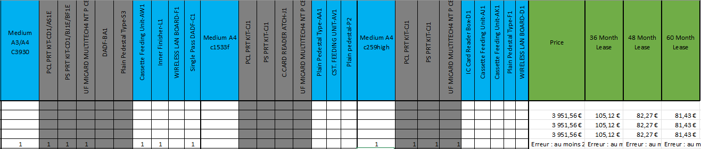
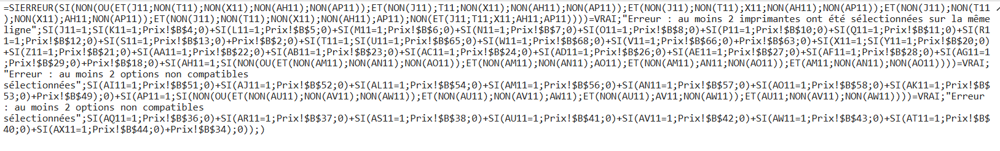

Migration Imprimante

Le projet de migration vers la nouvelle infrastructure d'impression repose sur l'intégration de la solution Uniflow de Canon, qui permettra d'optimiser la gestion des impressions au sein de l'organisation. Uniflow est conçu pour améliorer l'efficacité des flux de travail d'impression, offrant des fonctionnalités avancées telles que la gestion des coûts, le suivi des impressions et la possibilité de personnalisation des modèles d'impression. Grâce à son interface intuitive et à sa capacité d'intégration avec divers systèmes, Uniflow facilitera la transition depuis l'ancienne solution Xerox tout en garantissant une sécurité renforcée et une réduction des déchets papier. Le déploiement de cette solution s'accompagnera de la formation des utilisateurs et de l'adaptation des processus internes pour maximiser les bénéfices de cette migration, rendant ainsi l'environnement d'impression plus durable et plus efficace pour tous les utilisateurs.
Technologies Utilisées
- Visio
- Suite Office(Excel, PowerPoint & Teams)
- Uniflow
- Grafana
Fichier Visio (diagramme de Gantt)

Fichier Excel Stock physique
Fichier Excel initiale

Image Prix Canon :

Transformation en fichier excel Intéractif
Transformer le fichier de canon en un fichier qui calcule le prix et génère des erreurs.
cas erreurs
Formule :
Fichier Excel :
UniFlow
UniFlow est une solution de gestion des impressions qui permet de contrôler et d'optimiser les flux d'impression au sein d'une organisation. Elle offre des fonctionnalités avancées telles que le suivi des impressions, la gestion des coûts, la sécurité des documents et l'intégration avec divers systèmes d'exploitation et applications. UniFlow permet également de réduire les déchets papier en optimisant les processus d'impression et en offrant des options d'impression recto verso et en plusieurs exemplaires.
Fonctionnalités
- Une imprimante choisis pour pouvoir imprimer dans toutes l'europe
- Imprimer depuis son télephone
- Impresion sécuriser
- Impression via un badge
Image de l'interface Uniflow :

Création de procédure :
extrait :